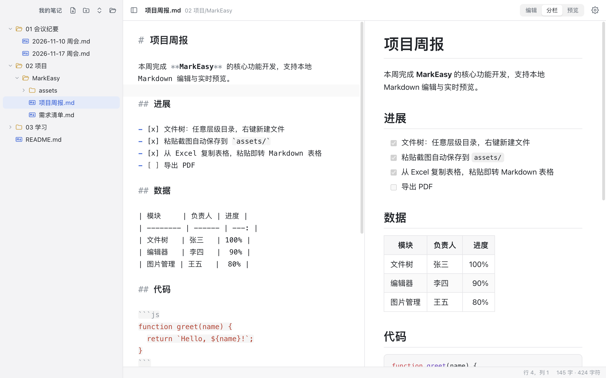
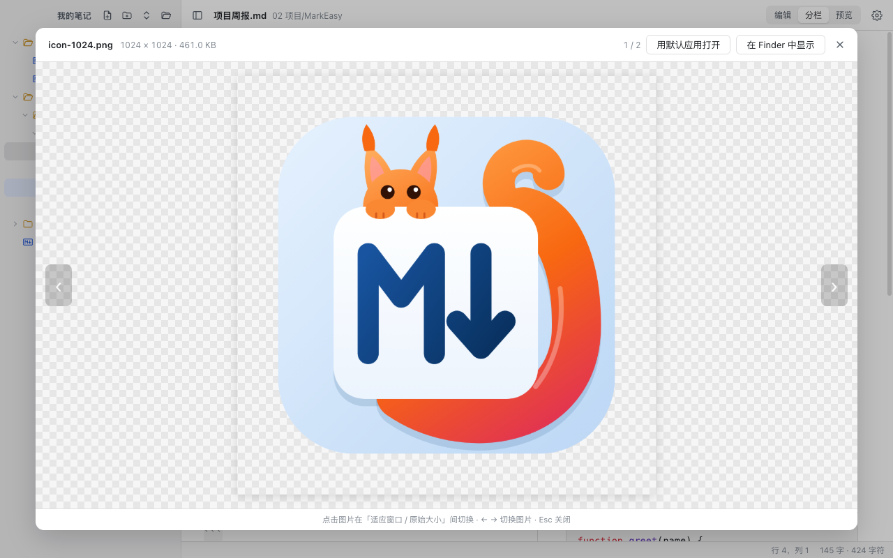
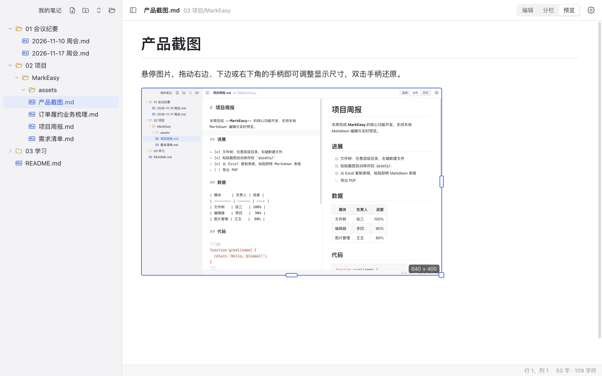
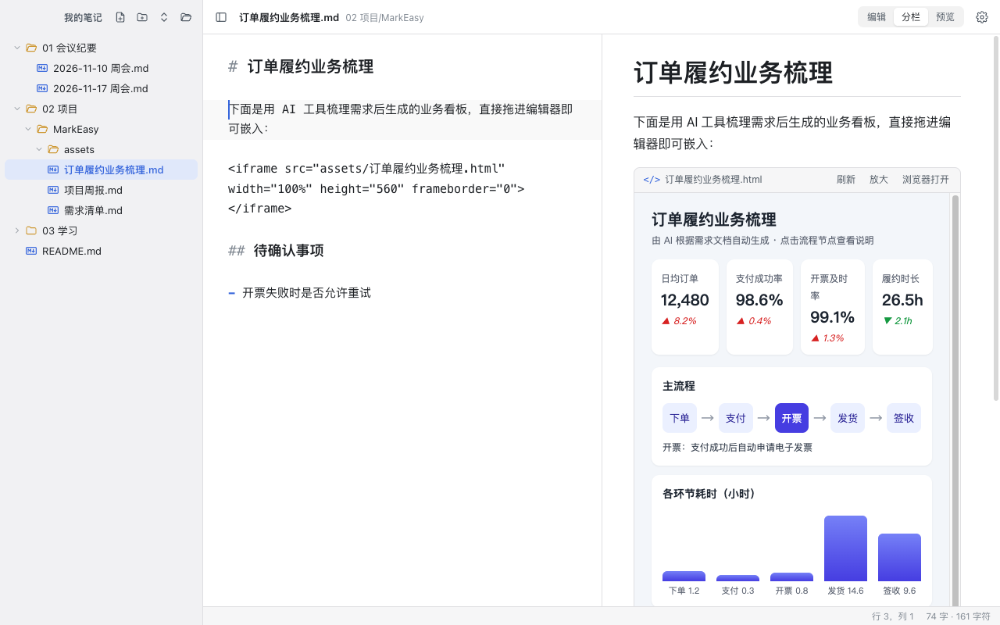
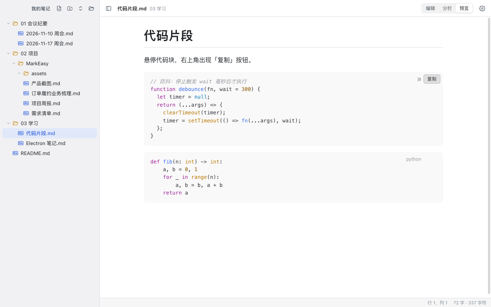
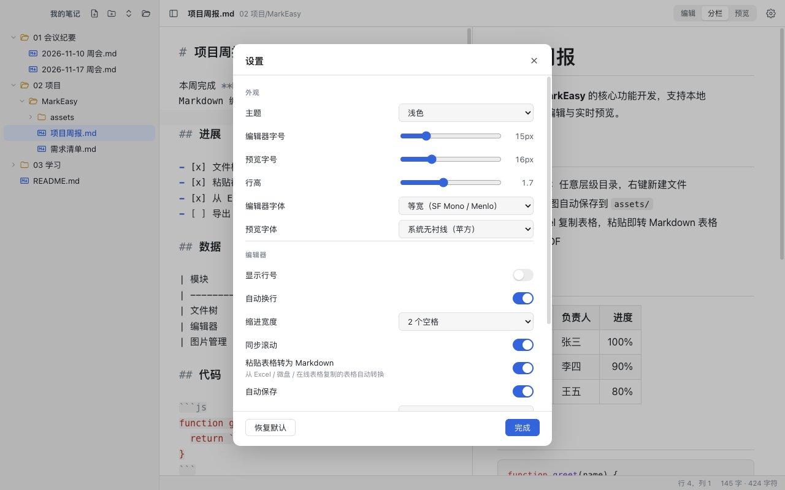
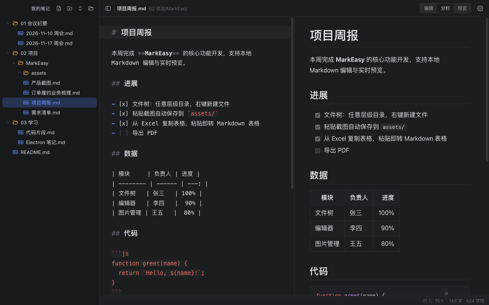

● v1.1.2 · 免费开源 · macOS / Windows
写在你自己硬盘上的
Markdown 编辑器
打开任意文件夹就是笔记库，所有内容都是普通的 .md 文件。
不联网、不要账号、不收集任何数据，换任何编辑器都能接着用。
支持 macOS（Apple Silicon）与 Windows 10 / 11（x64）

打开任意文件夹就是笔记库，所有内容都是普通的 .md 文件。
不联网、不要账号、不收集任何数据，换任何编辑器都能接着用。
支持 macOS（Apple Silicon）与 Windows 10 / 11（x64）

MarkEasy 只做一件事：帮你把硬盘上的 Markdown 文件写得更顺手。它不是一个平台，不需要你把内容交给任何人。
文件就是磁盘上的 .md，目录就是文件夹。没有数据库、没有私有格式，用记事本也能打开。
应用里没有统计、上报、自动更新等任何联网代码，断网也能完整使用。
不用注册、不用登录，没有服务器，内容就不会离开你的电脑。
全部源码公开在 GitHub。上面每一条承诺，任何人都可以查看代码自己验证。
很多笔记工具把「方便」建立在「把你的内容放到它的服务器上」之上。MarkEasy 走的是另一条路。
connect-src 'self'）禁止页面发起网络请求。settings.json（字号、主题、上次打开的文件夹等），不包含笔记内容。https://…）或嵌入了网页，预览时会像浏览器一样加载这些地址；点击外部链接会用系统浏览器打开。只引用本地文件，就完全不会联网。这些在 MarkEasy 里都不存在
磁盘上看到的就是全部，整个文件夹拷走即可迁移
截图、表格、图表、代码，这些最费时间的环节，MarkEasy 都帮你自动处理成标准的 Markdown。
左侧文件树管理目录，中间写、右边看，三种视图一键切换。
截图后直接 ⌘V / Ctrl+V，图片自动保存到当前文档旁的 assets/，并写好相对路径。
assets// 分隔的相对路径，macOS 和 Windows 都能正常显示
鼠标悬停图片出现手柄，拖右下角等比缩放，拖右边 / 下边单独调宽 / 高，双击还原。
<img width="640" height="400">
从 Excel、WPS、企业微信微盘、腾讯文档或网页复制表格，粘贴即得到对齐好的 Markdown 表格，再也不用手敲竖线。
<br>，| 自动转义，按中文宽度对齐源码姓名 部门 备注 张三 云发票 第一行↵第二行 李四 A|B 100
| 姓名 | 部门 | 备注 |
|---|---|---|
| 张三 | 云发票 | 第一行 第二行 |
| 李四 | A|B | 100 |
用其它 AI 工具梳理业务时生成的看板、流程图、分析报告，直接拖到编辑器里，图表和交互照常运行。
assets/，插入标准 <iframe>
基于 highlight.js，内置 36 种常用语言的高亮。



仅编辑 / 分栏 / 仅预览，分栏时同步滚动。
表格、任务列表、删除线、围栏代码块、Front Matter。
停止输入后自动保存，切换窗口时也会保存。
适中 860px / 宽 1200px / 铺满，大图显示更完整。
回车自动续写有序、无序和任务列表。
常用格式命令都有快捷键，和系统习惯一致。
LF / CRLF 原样保留，跨平台协作不产生无意义改动。
原生菜单与对话框，双击 .md 直接打开。
每款工具都有自己擅长的地方。MarkEasy 的选择是：内容百分之百留在本地、保持标准格式，再把写技术文档、业务文档最常用的几个环节做顺。
| MarkEasy | Typora | Obsidian | 云端笔记Notion、语雀、飞书文档等 | |
|---|---|---|---|---|
| 内容存在哪里 | 本地文件夹 | 本地文件夹 | 本地文件夹官方同步服务可选 | 服务商的服务器 |
| 文件格式 | 标准 Markdown | 标准 Markdown | Markdown + 扩展语法双链、嵌入等语法在其它工具里不通用 | 平台私有格式导出为 Markdown 时常丢失格式 |
| 需要账号 | 不需要 | 不需要购买授权需激活 | 不需要使用同步需登录 | 必须登录 |
| 价格 | 免费 | 付费买断提供试用 | 免费使用同步、发布等为付费服务 | 免费版 + 订阅 |
| 源代码 | 开源 | 闭源 | 闭源插件生态开放 | 闭源 |
| 编辑方式 | 源码 + 实时预览分栏 | 所见即所得 | 源码 / 实时预览 | 所见即所得块编辑 |
| 拖入 HTML 页面嵌入 | 内置，自动转存 + 沙箱 | 可手写 iframe | 可手写 iframe | 嵌入网页链接 |
| 插件扩展 | 暂无 | 主题可定制 | 非常丰富 | 集成与模板 |
| 平台 | macOS（Apple Silicon）、Windows | macOS、Windows、Linux | 桌面端 + 移动端 | 网页 + 全平台客户端 |
* 其它产品信息基于公开资料整理，功能与价格可能随版本变化，请以各产品官方说明为准。
安装包直接从 GitHub Releases 下载，没有中间商，也没有捆绑软件。
Apple Silicon（M1 / M2 / M3 / M4 芯片）
首次打开：在「应用程序」中右键 → 打开，或在「系统设置 → 隐私与安全性」中点「仍要打开」。
Windows 10 / 11，64 位（x64）
出现「Windows 已保护你的电脑」时，点更多信息 → 仍要运行。
安装包暂未购买开发者证书签名，所以首次打开会有系统提示。历史版本与更新说明见 GitHub Releases。
应用代码中没有任何统计、上报或自动更新逻辑，界面还通过内容安全策略禁止发起网络请求。源码全部在 GitHub 上，可以自行检查；也可以断网使用，所有功能都正常。唯一的例外是文档里引用了网络图片或嵌入了网页时，预览会加载这些地址。
存在当前 Markdown 文件所在目录下的 assets/（目录名可在设置中修改），引用使用相对路径。整个文件夹拷到另一台电脑，包括 macOS 与 Windows 之间互拷，图片都不会丢。
能。MarkEasy 只写标准 Markdown；调整过尺寸的图片和嵌入的 HTML 使用标准的 <img>、<iframe> 写法，GitHub、Typora、VS Code 等都能正常显示。
可以。笔记库就是一个普通文件夹，放进 Git 仓库或任意网盘同步目录即可。MarkEasy 会自动感知外部修改并刷新，还会保留文件原有的换行符，不会产生无意义的改动。
安装包暂未使用 Apple / 微软的开发者证书签名。macOS 上右键应用选择「打开」即可，仍不行可以执行 xattr -cr /Applications/MarkEasy.app；Windows 上点「更多信息 → 仍要运行」。
嵌入页面运行在沙箱中，不能使用 localStorage、Cookie 等浏览器存储，也不能读取本地其它文件。依赖这些能力的页面，可以点嵌入框上的「浏览器打开」。建议使用资源已内联的单文件 HTML。
macOS：~/Library/Application Support/MarkEasy/settings.json；Windows：%APPDATA%\MarkEasy\settings.json。只包含字号、主题、上次打开的文件夹等界面设置。